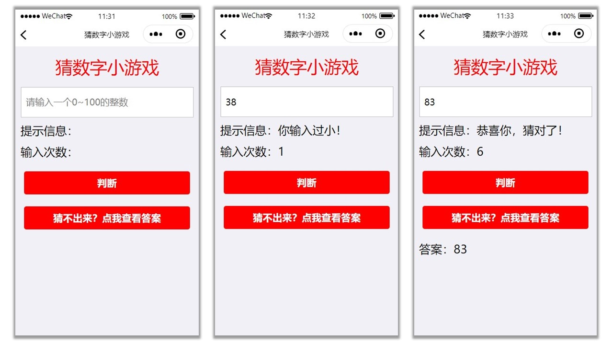

学无止境 不要轻易放弃。学习成长的路上，我们长路漫漫，只因学无止境。
微信小程序开发：猜数字小游戏
Brayden Bao

一、案例描述
设计一个微信小程序，由后台生成一个0~100的随机整数，用户猜这个整数，并在输入框中输入用户猜的数字，点击提交按钮，小程序将用户输入的整数与后台生成的随机整数进行比较，并输出结果。同时输出用户提交的次数。如果用户猜不出来，点击按钮可查看答案。
二、设计思路
1.页面设计思路
由于需要用户输入数字与后台随机整数进行比较，我们可以通过输入框input组件获得用户输入。接下来通过view组件显示提示信息和输入次数。最后还要有提交按钮，即button组件。我们还可以设计一个查看答案的按钮，通过hidden命令先将答案隐藏，如果用户点击查看答案按钮则显示答案。
2.逻辑层设计思路
由于需要后台生成一个0~100的随机整数，所以我们可以在js文件中定义一个random函数，用来生成随机整数。同时，我们还需要一个函数来判断用户输入与系统随机整数大小，并输出相应的结果。在判断函数中，我们可以定义一个变量i，用来计数。
三、程序设计
1.页面设计
首先通过input组件定义一个输入框来获得用户输入，代码如下：
<input placeholder="请输入一个0~100的整数" type="digit" bindinput="num">
</input>
接下来通过view组件获得后台提示信息和输入次数并显示
<view>提示信息：{{tips}}</view>
<view>输入次数：{{i}}</view>
最后提交和查看答案按钮可以通过button组件实现
<button bindtap="judge">提交</button>
<button bindtap="answer">猜不出来？点我查看答案</button>
我们可以通过view组件显示答案
<view hidden="{{flag}}">
<view>答案：{{rand}}</view>
</view>
2.逻辑层设计
首先通过onLoad函数生成一个0~100的随机整数，代码如下：
onLoad:function(){
r=parseInt(Math.random()*101);
},
接下来通过input组件绑定的num函数获得用户的输入数字，代码如下：
num:function(e){
this.setData({
random:parseInt(e.detail.value)
})
},
获得随机数和用户输入数字之后我们就可以进行判断，并输出提示信息，可以如下实现：
judge: function(){
i++
if(this.data.random == r){
this.setData({
tips:"恭喜你，猜对了！"
})
}else if(this.data.random > r){
this.setData({
tips:"你输入过大！"
})
}else{
this.setData({
tips:"你输入过小！"
})
}
this.setData({
i:i
})
},
我们还需要一个函数来控制答案的显示，代码如下：
answer:function(){
this.setData({
rand:r,
flag:false
})
},
到这，我们的基本功能就已经实现了。
四、页面美化
基本功能实现之后，我们可以通过修改wxss文件对我们的程序进行美化。
我们可以给页面一个背景颜色，然后让输入有一个边框，之后还可以对button按钮样式进行修改设计。
代码如下：
page{
background: #f1f0f6
}
input{
background: #fff;
height: 120rpx;
margin: 10px;
padding-left: 8px;
border: solid 1px silver
}
button{
margin: 50rpx 0rpx;
background-color: red;
color: white;
}
五、源代码
1.js文件代码
var rand,i=0,r,random,tips;
Page({
data: {
flag:true,
random:'',
tips:'',
times:''
},
onLoad:function(){
r=parseInt(Math.random()*101);
console.log(r)
},
num:function(e){
this.setData({
random:parseInt(e.detail.value)
})
},
judge: function(){
i++
if(this.data.random == r){
this.setData({
tips:"恭喜你，猜对了！"
})
}else if(this.data.random > r){
this.setData({
tips:"你输入过大！"
})
}else{
this.setData({
tips:"你输入过小！"
})
}
this.setData({
i:i
})
},
answer:function(){
this.setData({
rand:r,
flag:false
})
},
})
2.wxml文件代码
<view class="title">猜数字小游戏</view>
<view>
<input placeholder="请输入一个0~100的整数" type="number" bindinput="num"></input>
</view>
<view style="font-size:20px;margin:10px;">提示信息：{{tips}}</view>
<view style="font-size:20px;margin:10px;">输入次数：{{i}}</view>
<button bindtap="judge" style="width:90%;">判断</button>
<button bindtap="answer" style="width:90%;">猜不出来？点我查看答案</button>
<view hidden="{{flag}}">
<view style="font-size:20px;margin:10px;">答案：{{rand}}</view>
</view>
3.wxss文件代码
page{
background: #f1f0f6
}
input{
background: #fff;
height: 120rpx;
margin: 10px;
padding-left: 8px;
border: solid 1px silver
}
button{
margin: 50rpx 0rpx;
background-color: red;
color: white;
}